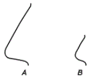

Беседа 3185 от 3877 · Беинса Дуно
Методи за постижения
„Отче наш“
„Махар Бену Аба“
Пишете върху темата „Малките добри и големите добри постъпки“. Да бъде мисъл през цялата седмица. Какво се подразбира под една малка добра постъпка и една голяма добра постъпка?
Пишете втора тема: „Ползата от тънките и дебелите въжа.“
Човек, най-първо, се ражда тънко въже, после става дебело въже. Като стане дебело въже, остарее. Най-първо, човек е една малка добродетел, после става голяма.
Вие размишлявали ли сте по някой път върху философията на една кибритена кутия, върху съдържанието на една кибритена кутия? Много пъти вие разглеждате някой философски въпрос, но ако ви дам една тема, „Кибритената кутия“, какво може да ми разправите? Ако трябва да направите една лекция, какво бихте направили? Най-първо, ще говорите от какво е направена кутията, после – от какво са направени клечките и за какво служат. Там ще свършите. Много малко може да кажете за нея. Но тия миролюбивите клечки, които по естество са миролюбиви, расли са някъде в гората, може човеколюбивият човек да ги вземе и да ги направи много лоши клечки – и добро да вършат, и зло да вършат. Ами че с една кибритена клечка ще запалят огън, ще те опекат на него. Ако я нямаше, с какво ще те мъчат? Тъй с кибритената клечка запалят огъня, накладат го, пак ще те опекат на него. Питам, кой е виноват, когато кибритената клечка прави престъпление?
Казвам, всеки човек може на най-хубавата дума да ѝ тури една главичка, както кибритената клечка, и да направи думата добър – турите пред думата не е и става – не е добър. Туй, което не е добро, то е клечката, която е миролюбива, туй не е е главичката. Като драснете, запали се тази главичка, ще запалите огъня. Злото в огъня е вече предпазено. То е едно зло, но вие го намирате за уместно. Но уместно е, ако сте далеч от него. Ако сте близо, няма да е уместно. Някои казват, че огънят е много полезен. Полезен е отдалече на един метър, на два метра, но близо при него, като туриш ръката, ще видиш, че е много лошо. Има много работи, които отдалече са много добри, а отблизо са много лоши. После имаме думата лош. Като турите пред нея не е, става не е лош. Имате не е добър и не е лош. В дадения случай каква е разликата между не е добър и не е лош? Коя дума е тук положителна? Не е добър ли е положителна, или не е лош е положителна? Значи, ако махнем не е при лош, става лош. Ако махнем при не е добър не е, става добър. Като турим при думата добър не е, думата добива друго съдържание. А пък като турим не е при лош, значи лошото придобива нещо. Като стане не е лош, думата става положителна. Като турим не е при добър, думата става отрицателна. Като махнем не е от не е добър, думата става положителна. Като махнем не е от не е лош, думата става отрицателна.
Сега във вас се заражда мисълта, защо е така. Аз ще ви запитам: защо шивачките надупчват дрехите с машината? Мислите ли, че е едно благодеяние, като турите оная дреха на машината и започнеш: трака-трака, надупчиш я. Казваш: „Много добре е ушита.“ Казвам: „Много добре е надупчена.“ Казва: „Много добре е ушита, изящно, да ти е мило да я гледаш.“ Ако попитате дрехата така надупчена, какво ще каже тя? Вие ще кажете, че дрехата не усеща болка. Представете си в отделенията, нали сте били ученици? Започвате в първото отделение, учителите се отнасят добре, във второ отделение стават малко по-лоши, в трето – малко по-лоши, и в четвъртото – още по-лоши, но в университета са най-лоши. В първото отделение забавляват децата, във второто отделение учителите си позволяват да помилват малко ученика. По някой път, като го удари, го помилва. Едновремешните учители имаха пръчки, казва: „Дай си ръката.“ Детето простре ръката, но като рече учителят да удари, то я свие. Най-първо, не иска да си даде ръката. Погледнеш, от очите потекат извори. Учителят толкоз магично удря, че като удари по ръката, вода потича. Ученикът човек става. Как се нарича тази наука за водата? Учителят хидролог става, намира вода. Нали сега ходят да търсят вода, някъде да копаят. Учителят, като срещне едно дете, като го удари по ръката, погледнеш, вода потече. Казва му: „Вода има в тебе. Щом има вода, човек ще станеш.“ Дето са ви били, то е голяма наука. Казва: „Дай си ръката. Ти човек ще станеш или не?“ Ако, като те удари и потекат сълзи, казва: „От тебе човек ще стане.“ Ако не потекат, казва: „На такова сухо място не може да става нищо. Градинарството не може да се развие.“
Като плачат децата, показва, че вода има, може да стане градинарство. Тъй щото вас били ли са ви с пръчка и шляпали ли са ви със шамари? Хубаво тогава. Питам: къде е лошото, че един учител плеснал едного по лицето? На твоето лице се събрала известна материя, дошла отнякъде и се набрала материя на ръката на учителя. Тия материи се обичат, привличат се от обич. Казва, учителят тъй плеснал, тъй биел. Откъде накъде? Ако можеш да повярваш, че ударът на учителя е едно благословение, като разбереш, ще туриш не е настрана, казваш: добре е.
В Бургас имало някой грък – разправяха един пример. Като влезе някой просяк да проси от него, той ще го изблъска навън, нищо не дава. Като излезе просякът навън, върви из улицата, той ще вземе пет–десет лева, ще иде по някоя забутана улица да намери просяка и ще го мушне, ще каже: „Ха бре, керата.“ Като го мушне, ще му мушне парите в джоба и ще се върне. Най-първо, просякът е обиден, че го изпъдил, втората обида е, че го мушнал и му казал: „Ха бре, керата.“ Но като погледне после в джоба десетте лева, забравя мушкането, той се засмее вече.
Казвам, когато има мушканица, има нещо турено в джоба, тогава забравяте всичките погрешки. Докогато има мушкане и няма нищо турено в джоба, погрешките не се забравят. Този грък дава много добър пример. Ще изпъди просяка, после ще му даде.
Вие как посрещате просяците? Бръкнеш в джоба си и набуташ една петолевка, но от тези сребърните, които сега струват двайсет и пет лева. Като хванеш двайсет и петте лева, не ти се дават. Бръкнеш, напипаш десет лева, и то не ти се дава. Напипаш два лева, напипаш един лев и най-после, като пипаш, половин лев извадиш и дадеш. Като бръкнеш, каквото хванеш, дай го. А пък ти бъркаш и правиш избор. После правиш разни съображения. Тъй както правиш, и всичките същества, които те срещат и които ти помагат, и те правят същото, каквото ти си направил. Бръкне то в джоба – вижда сто лева. Бръкне – петдесет лева, и него остави. Като намери един лев, ще ти даде. Казвате: „Много скържав човек е този богаташ.“ И ти си същият. Едно време ти бръкна в джоба си и даде половин лев, сега половин лев повече са ти дали. Ти намираш, че няма никаква щедрост.
Казвам, човек в своите постъпки, когато постъпва, трябва да бъде щедър, не разточителен. Щедрост, значи да задоволиш в даден случай една човешка нужда, да можеш в даден случай да задоволиш нуждата на един свой ближен. Щом не задоволиш, то е закон на скържавост.
Имате такава дума: не е трезвен. Отделите не е, става трезвен. Имате не е пияница. Отделите не е, става пияница. Та знаете ли на какво мяза туй? Как ще обясните? Да извадите един морал. Не е добър – не е лош, не е лош е позлатено, не е добър е окаляно. Каква е разликата? Позлатеното се изтрива, а калта като премахнеш, виждаш, че злато остава вътре. Значи позлатените работи са лоши, а окаляните работи са златни. Като изтриеш позлатеното, остава лошо; като измиеш окаляното, остава златото. Като изтриеш калта на не е добър, става добър. Като изтриеш не е на не е лош, изтриваш позлатеното, остава лош. На не е добър като изтриеш не е, като измиеш калта, става добър. В единия случай позлатеното като изтриеш, лош остава. Като махнеш окаляното от доброто, остава доброто. Сега окаляните работи чистете, пък позлатените не ги изтривайте. Някой път вие позлатеното много го търкате и остава лошото. Имате крива постъпка, речете да го изчистите, като речете да го изчистите, остава лошото. Не го бутайте. Позлатеното хич не обича да го търкаш.
Като пресушите някой извор или някоя река, на реката ако пресушите коритото, може да направите полза някому. Но ако пресушите извора, каква полза ще направите? Казвам, опитвали ли сте вие да поправите някоя ваша погрешка? Кое е по-добро да кажеш: не е добър или не е лош? Лошавината в човека конкретно в какво седи? И в какво седи добрината на човека? Не е добър показва, че крие добрината си. Който не е добър, крие добрината си. Който не е лош, той крие лошавината си. Този, който крие добрината си, става лош. Другият, който крие лошавината си, става добър. Лошият, като крие лошавината си, става добър. Добрият, като крие добрината си, става лош. Тогава имате плюс и минус. Минусът е добър, ти като дадеш, то е минус. Лошият, той взема всякога, той е плюс, увеличава се. Лошият всякога взема, добрият всякога дава. Значи добрите неща са винаги по-леки, лошите неща са винаги по-тежки. Конкретно разсъждавам върху нещата. Лошият е, който всякога се увеличава в своята тежест. Такава е идеята. При лошия нещата стават по-тежки. Ако туриш двайсет и пет килограма на гърба и има да вървиш сто километра, ще те болят рамената. Ако ти снемат тази раница, турят ти на гърба не сто, но един килограм, ти вървиш и ти е приятно.
Тъй щото всякога лошите работи отегчават живота. Всяко нещо, което отегчава живота, е лошо. Всяко нещо, което улекчава живота, е добро. И следователно в приложението на живота вие, като мислите, с вашите мисли, с вашите чувства и с вашите постъпки или улекчавате живота, или го отегчавате. Казва: какво нещо е добрата постъпка? Конкретно ония мисли, ония чувства и ония постъпки, с които ние правим нещата по-тежки в себе си, то не е добро. А пък ония постъпки, ония чувства и ония мисли, с които нещата олекват, правим ги да бъдат леки, са добри. Опарил си се някъде, казваш: за добро е. Няма да се мине дълго, тази опарена кожица ще се обели, ще дойде нова кожица. Говоря за малките погрешки. Опарил си се, казваш: за добро е. В живота всякога туряйте мисли, които олекват. Всякога внасяйте добри мисли, добри желания и добри постъпки. Те са, които съграждат.

Мен ми разправяха в България за един пример. Един касапин двайсет–двайсет и пет години се занимавал с клане, забогатял, оженил се, раждат му се три деца. Едното било на дванайсет години – аз ги турям така – другото на осем години и третото – едно малко кърмаче. Един ден най-голямото дете казва на братчето си: „Ела да ти покажа как татко коли овците.“ Братчето му не знае, отива. Голямото взима ножа и отрязва гърлото на братчето си, за да му покаже. Като видяло кръвта, то се уплашило, носи ножа и като тичало, пада и се натъква на ножа. Майката чува че става нещо, тя пък къпала малкото дете, оставила го в коритото, за да види и в това време малкото дете се удавило във водата. Това е последствие на касаплъка.
Казвам, онова, което ти придобиеш от лошия живот, ти от него полза няма да добиеш. Ти не туряш в главата си една Божествена работа, не туряш главата си да мисли добре. Какво трябва да правиш тогава? Ще туриш главата си да мислиш право. Ще туриш сърцето си да върши работата си добре. Ще туриш волята си, и тя да служи добре. Волята ти трябва да служи, сърцето ти трябва да върши и главата ти да мисли добре. Първото нещо е. Някой казва: „Как да мисля добре?“ Най-първо, ще се научиш да говориш добре. Ти казваш на себе си: „От мене човек няма да стане.“ Не говори такива глупости. Ти виждаш времето облачно, казваш: „Лошо време.“ Не говори такива глупости, времето лошо не може да бъде. Казва: „Слънцето не грее.“ Не говори такива глупости. Това са лъжи, бели лъжи. Казва: „Не грее слънцето.“ Не говориш истината. „Няма добър човек на земята.“ Не говори такива лъжи. При такава една философия какво може да излезе? Слънцето не греело, облаците са лоши, вятър духало, всичките хора лоши. Оставаш само ти добър човек. Откъде се взе само един добър човек в света? Ами че онова вълче, което мисли, че е добро, баща му добър ли е? Че баща му, преди да го отхрани, колко овци извади от кошарите? Знаете ли колко дела има заведени против този вълк? Всеки вълк, който е взел някоя овца от някоя кошара, дело има заведено. Сто овци като изяде, сто дела има заведени. Направиш една лоша постъпка, дело има заведено. Ще дойде един ден, веднага ще се завежда делото. Направиш едно добро, пак има дело заведено. Ще те възнаградят. Веднага се завеждат делата, но делото може да се насрочи в разни съдилища. Може делото да е в мировото съдилище, скоро се свършва по някой път. Делото може да е в окръжния съд. Делото може да е в апелативния съд, някой път може да е в касационния съд. Ако то се бави пет–десет години, може да е в касационния съд. Ако се бави пет години, може да е в апелативния съд. В окръжния съд може да е две години. А в мировото съдилище може и по-скоро да свърши. Между себе си като се разправяте, ежедневно стават тия работи.
Англичаните, като се обидят, имат обичай да се боксират. Те не дават заявление да се съдят, но и двамата започват да се боксират. Набият се хубаво, потече кръв, шапките паднат. После се хванат за ръцете, поздравят се. Казва: „Извинете.“ Другият, и той се извинява. Като се набият, после се ръкуват, поздравяват се и се примиряват. Мирово съдилище. Вкъщи туй нали го знаете, нали се дуелирате?
Аз веднъж гледах две деца в две колички, малки деца. Едното на две години и половина. На едното дали една ябълка. Другото, което е на две години, го гледа. Хвана го за косата, разтърси му главата, и пак му взе ябълката, и другото взе да плаче. Казвам: и двамата хора ще станат. Аз сега тълкувам, аз съм коментатор. Казвате: „Тази ябълка ти я дадоха, знаеш как да я изядеш.“ Мисли другото и като поседя, казва: „Като я взе, знаеш какви ще бъдат последиците.“ Раздруса го хубаво и му взе ябълката. Вие сега ще питате при кого ще остане ябълката. При когото и да е останала, резултатите ще бъдат същите. Онзи, който даде ябълката, не беше умен човек. Но туй стана заради вас, аз да видя, да ви дам този пример. Той трябваше да тури количките надалеч едно от друго, че да не може едното дете да вземе ябълката на другото. Трябваше да тури на четири–пет метра разстояние количките. Онзи турил количките една до друга, съблазняват се, изкушава ги. Другото казва: „То не е за тебе, за мене е.“ Хваща го за главата, разтърсва го за косата. Онова на двете години мисли, че онова си е позволило нещо, което не е за него. Големите хора всякога казват: „Това на тебе не прилича, на мене.“ Хубавото ядене, хубавите дрехи са на умните хора, на големите. Малките могат без тях.
Казвам, онзи нос показва, че човек е умен, трябва да знае да го употребява. Този с дългия нос е опасен, мушка навсякъде. А пък този късия нос е глупав. Глупавите хора не правят толкова пакости, колкото умните правят. Умният човек много пакости може да направи, глупавият – малко. Глупавите, само като вървят, прах вдигат по пътя, а пък умният с камъни ще те удари. Умният има и добрата страна. Той, като ти даде нещо, ще ти даде нещо хубаво. Казвам сега, носът на човека трябва да е като кибритена клечка. Ако си умен, ще запалиш плевнята, ако не си умен, ще запалиш плевнята. Ако цялата кутия има сто клечки, има големи кибритени кутии, може да запалиш сто плевни, тогава цялото село ще ги туриш в смущение. С една кутия може да направиш една илюминация в селото.
Казвам, сега в живота хората са дошли и правят погрешки от незнание, не знаят последствията. Но човек, да се учи, трябва да знае законите на своята мисъл, как да мисли правилно. Има желания, които не са естествени, има мисли, които не са естествени, има и постъпки, които не са естествени. Представете си, че вас ви съблекат гол и ви намажат с мед и ви свържат за едно дърво. Или представете си, че като ви съблекат гол, ви облекат със скъсани дрехи. Кое е по-хубаво: да те съблекат гол и да те намажат с мед или да те съблекат гол и да те облекат в някои парцали? Кое е за предпочитане? Богатият е съблечен гол и намазан с мед. Сиромахът е съблечен гол и облечен с парцали, пуснат е свободен да върви. Кое е по-добре? Така аз разглеждам работата. Богатият е с мед намазан и е свързан, сиромахът – облечен с парцали и свободен пуснат да върви. И двамата имат същата съдба. На единия са взети дрехите и на другия са взети дрехите. Но единият, който е намазан с мед, има какво да яде. Като се намери в голяма нужда, ще си близне малко. Богатият ще си близне от меда, но понеже от меда по гърба не може да си близне, но само по рамената и ръката малко, защото е свързан, тук-там близне, и това е неговото щастие. Бедният, като върви със скъсани дрехи, няма никакъв мед намазан, гледа дупките. Но в живота за предпочитане е положението на бедния, който е свободен да ходи. И той има неприятности, но положението на богатия, който ближе от рамената си мед, е по-лошо, че ако го нападнат тия хапливите мухи, те, като изядат меда, ще започнат да изваждат вътрешния мед. То са философски работи. Вие не разсъждавате така. Във вашия ум ни най-малко тази идея я няма. Аз разсъждавам така. Вие казвате: „Блазе му на богатия човек. Къща има. Виж колко хубаво е облечен. Как е намазан с мед.“ Но колко струва това намазване? Да се поставите сега в положението на сегашните американски милионери, които са в Америка – при сегашните апаши, които съществуват, какъв страх имат. Всеки богаташ има по десет души детективи да го пазят, десет души гавази ги наричам. В турско време българите, като тръгнат, ще хванат един гавазин – българинът върви напред, гавазинът отподире, да го пази. Сега в Америка по десет души ги пазят, да не задигнат жена му или децата му, защото, ако ги задигнат, искат голям откуп. Защо ти е такова богатство? Остави, че ще го задигнат, но целия ден стоиш нащрек. И то си има хубавата страна, но то е само един вид на живота. То е лошата страна, но има и добра страна. Докато хората дойдат до онова – правото, разбиране.
В какво седи богатството на човека? Богат е според мене онзи, който знае да се ползва от своя ум. Богат човек според мен е онзи, който може да се ползва от богатството на своето сърце. Според мен богат човек е онзи, който може да се ползва от силата на своите постъпки. А пък в този смисъл, както вие разбирате, всеки човек, който може да се ползва от своя ум, е свободен. Всеки човек, който може да се ползва от богатството на своето сърце, е свободен и който може да се ползва от своите постъпки, е свободен човек. Има една сиромашия, която не трябва да желаем. Тогава бедните трябва да се научат да се ползват от своето сърце, Бог е турил спасението в техните сърца. Щом си станал богат, трябва да се ползваш от своето богатство.
Кое е по-хубаво: да кажеш колко си добър или колко си лош? След като те обере някой, да му кажеш: „Колко си добър, защото ми олекна.“ Ти носиш една чанта от двайсет и пет килограма на гърба си, сто километра има да пътуваш, среща те някой, взима ти товара. Казваш: „Колко си добър.“ Сега ще кажеш: „Мене ми е по-леко.“ Ти тръгнеш по пътя, казваш: „Обраха ме, какво ще правя сега?“ Ще си създадеш друго нещастие. Кажи на този, който те обрал: „Колко си добър. Колко си услужлив.“ Така лесно се говори философски, но след като снемат и ти вземат раницата, много мъчно е да кажеш: колко си добър.
Когато сте на представление, има места, дето хората не се обиждат. То е на сцената. Обижда го някой, но той със смирение издържа. В туй отношение защо човек да не може като актьор да каже: тъй е писано в драмата. Тази драма така са я написали, ти играеш същата роля. Ти играеш ролята на един крадец, откраднал си нещо. Казват: „Не те ли е срам?“ Съдят те. Ти седиш, носиш позора. Всичките хора като правят представление, другите им ръкопляскат на сцената, че хубаво са изиграли ролята. Ролята е хубаво изиграна, ти съзнаваш, че не си престъпник, но играеш ролята на престъпник, за да дадеш един урок на другите, за да знаят как трябва да постъпват. Някои от вас играли ли сте някакви роли на сцената? Всичките искат да играят такива хубави роли, ролята например на един цар или на някоя царица, на някой съдия, философ, на някой поет. Има и такива роли незавидни. Онези актьори на сцената се намират в трудно положение. Ще играеш ролята на някой, когото трябва да го убият. Трябва да знаеш как да умреш. Ще идеш да гледаш как умират хората, за да го представиш вярно. Като го мушнат, потече кръв, паднеш. Хубаво трябва да го представиш. Ще носиш едно гумено облекло, че малко червена вода ще има, като мушне, ще потече кръв. Ти паднеш, ще си представиш, че си умрял. Като станеш от сцената, пак си възкръснал.
Та казвам, когато ви мушнат във вашите гумени дрехи, не мислете, че е много сериозна работа. Двама актьори играят в Америка, единият се разгорещил, другият казва: „Внимавай, като мушкаш, да мушнеш гумената дреха, да не мушнеш другата. Внимавай, че си се разгорещил, да не ме мушнеш.“ Така се предпазва. Ставали са инциденти. Много актьори са убивани така на сцената.
Често и вие като актьори малко по-навътре мушнете, и после се извинявате. Трябва да бъде майстор човек да мушка само гумената дреха. Като мушнеш, да се свърши въпросът.
Мислете защо Господ ви е дал главата. Мислете защо Господ ви е дал сърцето. Мислете защо Господ ви е дал волята. Няма по-хубаво нещо да знаеш да държиш главата си така, както трябва, да управляваш сърцето както трябва и да използваш волята както трябва. То са най-хубавите неща в живота на един ученик.
„Само светлият път на Мъдростта води към Истината. В Истината е скрит животът.“
Двадесет и трета лекция на Младежкия окултен клас
12 април 1940 г., петък, 5 ч сутринта
София – Изгрев